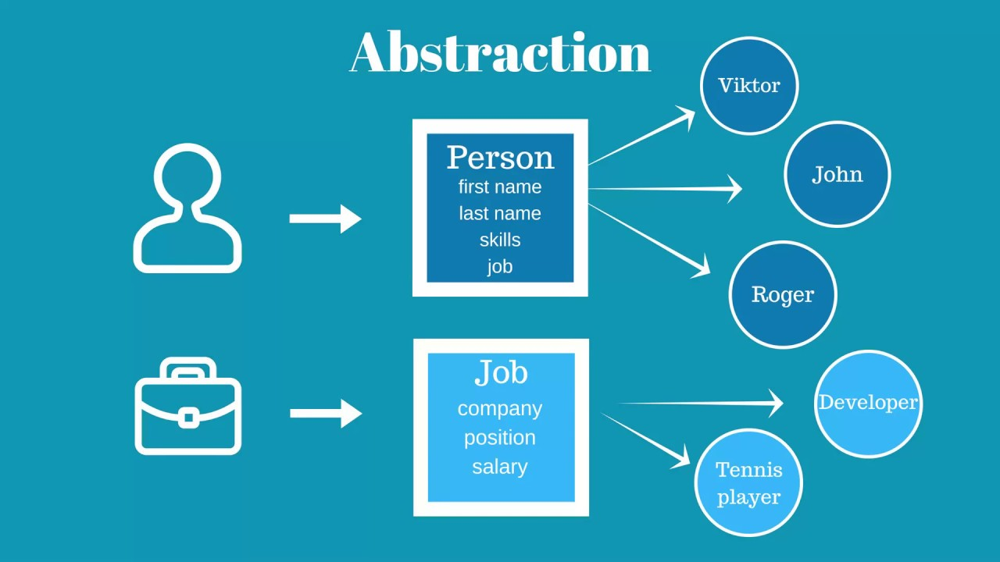

Key Principles:
- Divide and Conquer (Modularization)
- Abstraction
- Encapsulation
- Code Reusability
- Readability and Clarity
- Scalability
- Maintainability
- Testing
- Documentation
- Version Control
Divide and Conquer (Modularization)
Divide and Conquer is a problem-solving paradigm that involves breaking down a problem into smaller, more manageable sub-problems, solving them independently, and then combining their solutions to solve the original problem. This strategy is particularly useful in algorithm design and software development to simplify complex tasks. In the context of modularization, which is closely related to the Divide and Conquer approach, the idea is to divide a system or a program into smaller, self-contained modules. Each module is responsible for a specific aspect of the system's functionality. These modules can then be developed, tested, and maintained independently, making the overall system more modular and easier to manage.
Abstraction
 Abstraction is a key concept in object-oriented programming (OOP) that involves simplifying complex systems by modeling classes based on the essential properties and behaviors they exhibit. It is the process of hiding the implementation details and showing only the necessary features of an object.
In simpler terms, abstraction allows you to focus on what an object does rather than how it achieves its functionality. It involves creating a simplified representation of an object with only the relevant characteristics and behaviors.
Encapsulation
Encapsulation is one of the fundamental principles of object-oriented programming (OOP). It refers to the bundling of data (attributes or properties) and the methods (functions or procedures) that operate on that data into a single unit known as a class. The class serves as a blueprint or template for creating objects, which are instances of the class.
The main idea behind encapsulation is to hide the internal details of an object and only expose what is necessary for the outside world to interact with it. This is achieved by using access modifiers to control the visibility of the class members (attributes and methods). Common access modifiers include public, private, and protected.
Code reusability

Code reusability is a software development principle that emphasizes the ability to use existing code assets in new contexts or applications. The goal is to avoid duplicating code and to leverage existing, well-tested components whenever possible. This practice has several advantages, including reducing development time, minimizing errors, and improving maintainability.
Readability and Clarity
Readability and clarity refer to the qualities of communication or design that make information easily understandable and accessible to the intended audience. These concepts can apply to various forms of content, including written text, code, graphics, user interfaces, presentations, and more.
TYPES OF METHODOLOGY